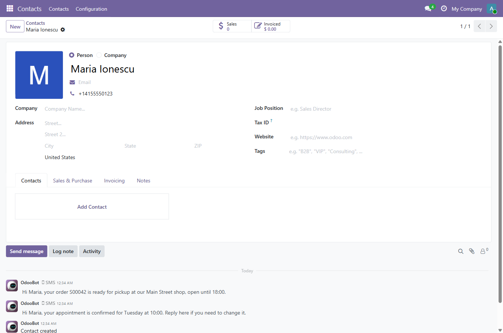
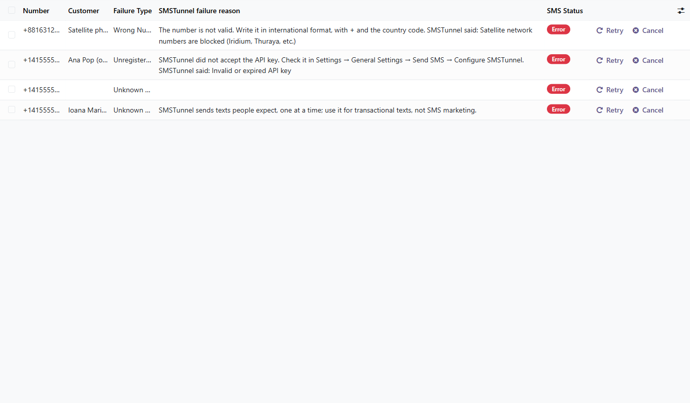
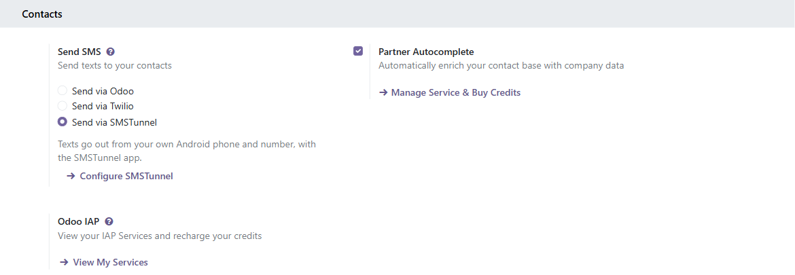
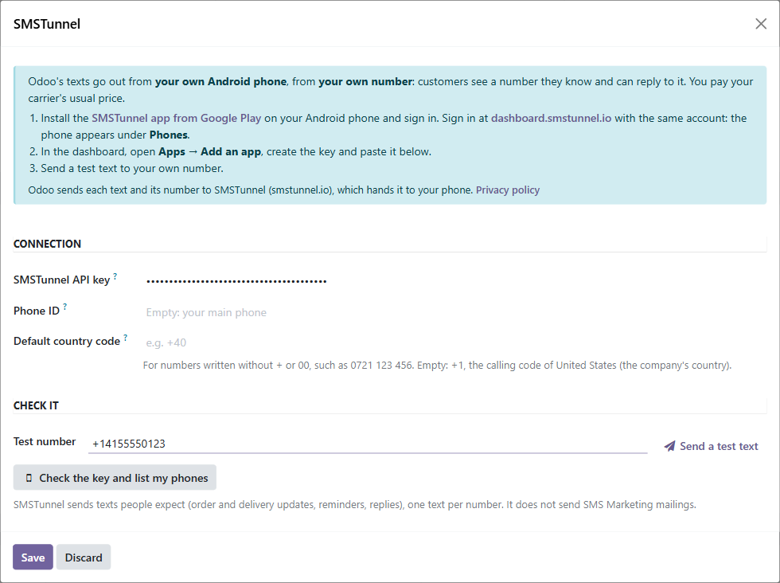
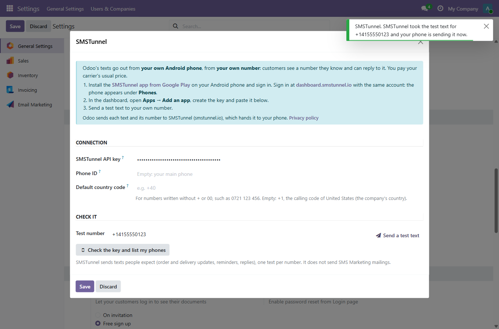

Odoo's texts from your own Android phone and your own number.
Choose Send via SMSTunnel in Settings, next to Send via Odoo and Send via Twilio. From then on, the texts Odoo sends for that company go out from your Android phone, with the SMSTunnel app. Customers see a number they know and can reply to it, and each text goes on your phone's own plan.
What you need
Odoo sends SMSTunnel each text with its number, and the Phone ID and country code you set; SMSTunnel hands the text to your phone. Nothing else leaves your database. Privacy policy: smstunnel.io/privacy.
For Odoo 19.0 · Community and Enterprise

Texts sent from a contact, in its chatter, as with any other provider.

When SMSTunnel refuses a text, Odoo shows why.

Step 2: Settings → General Settings → Send SMS.

Step 2: the key, an optional phone and the country code for local numbers.

Step 3: SMSTunnel took the test text and your phone sends it.
Questions or a problem? Write to contact@narboweb.ro with your Odoo version and what Odoo shows on the text (in developer mode: Settings → Technical → Phone / SMS).
SMSTunnel SMS is made by NARBOWEB SRL. It is not affiliated with, endorsed by, or sponsored by Odoo S.A. Odoo is a trademark of Odoo S.A. Android and Google Play are trademarks of Google LLC.